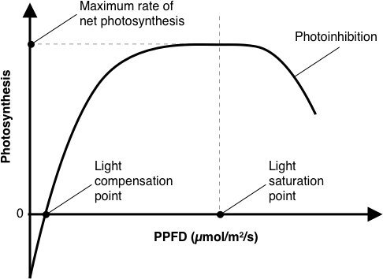

This is a starting point for understanding how to grow vegetables at home.
Hydroponics and container gardening are covered.
🍎 Concepts
☯️ Environmental parameters
When growing plants, your task is to balance a number of highly interdependent factors, as listed below.
An insufficient amount of, say, light or nutrition creates a limiting factor in plant growth and development.
On the other hand, excessive light or fertilizer (i.e. beyond what a specific plant species can handle at a given metabolic rate)
can also result in problems (tip burn, photo-oxidative stress).
Parameter
Measurement
Unit
Zone
Light
Daily Light Integral (DLI)*
mol/m²/day
Light
Temperature
Air temperature*
°C
Air
Humidity
Relative Humidity (RH)
%
Air
Wind
Wind speed
m/s
Air
Carbon dioxide (CO₂)
Carbon dioxide
ppm
Air
Nutrients
Electrical Conductivity (EC)*
μS/cm
Soil/Water
pH
pH*
pH
Soil/Water
Temperature
Root-zone temperature
°C
Soil/Water
Oxygen (O₂)
Dissolved Oxygen (DO)
ppm
Soil/Water
* key measurements for small-scale systems
Why are these relevant? Plants perform two critical processes which are complementary:
Plants convert light energy into storable chemical energy (carbohydrates) during photosynthesis.
In other words: ☀️ Light energy + 💨 Carbon dioxide + 💧 Water → 🔋 Stored energy + 💨 Oxygen
Plants use the stored energy (carbohydrates) to fuel growth, in a process called respiration.
In other words: 🔋 Stored energy + 💨 Oxygen → 💨 Carbon dioxide + 💧 Water
Light is the single most important environmental parameter as it literally provides energy for plant growth.
Temperature dictates a plant’s metabolic rate and therefore also strongly influences growth rate.
Additionally, there is another critical process:
The evaporation of water through a plant’s leaves pulls water (containing dissolved nutrients) up from the roots.
This is a passive process called transpiration.
Soil pH is sometimes called a “master variable” as it affects the solubility of soil nutrients
(among other things, including microbial activity) and therefore nutrient availability, hence plant growth.
Air humidity, wind, and temperature all affect the rate of transpiration and also therefore nutrient uptake and plant growth.
For this reason, poor ventilation actually can result in nutrient deficiencies.
On the other hand, excessive ventilation decreases relative humidity which, in combination with heating the cooler incoming air
(air holds more water at warmer temperatures), can increase transpiration, which decreases plant temperature and increases ambient humidity,
resulting in a vicious cycle. Alternatively, if transpiration occurs to the extent that there is not enough water in the plant
(e.g. during peak hours of the day), then stomata (microscopic openings on the undersides of leaves) will close, which increases leaf temperatures
and decreases CO₂ exchange… [1]
Humidity can be reduced in three ways: 1) heating (air holds more water at warmer temperatures), 2) ventilation (“out”), and 3) condensation (“in”).
Environments
In an indoor system, the environmental parameters are mostly controlled.
Limiting factors are likely 1) light, 2) space (area), 3) water, 4) nutrition, 5) oxygen (for soil-less systems and compact soils).
In an outdoor system, think about sun, wind, temperature, water access, soil conditions.
Look for planting calendars and first/last frost dates.
More about plant biology
Mary M. Pratt, Practical Science for Gardeners, 2005.
“Sprout”: Radicle emergence to expansion of cotyledons (false leaves)
-
Germination (Stage 3)
“Seedling”: Cotyledon expansion to vegetative growth
-
Vegetative
Growth of all true leaves
Transplant
Flowering
From first flowering to first fruit set
Pollinate*
Fruiting*
From first fruit set to growth, ripening, and first harvest
-
Maturity
From first harvest to the end of last harvest
Harvest
* fruiting crops only
A general rule of thumb is to plant seeds twice as deep as they are large.
More about plant growth
Mary M. Pratt, Practical Science for Gardeners, 2005.
“Chapter 10: Growth, Development, Transpiration, and Translocation as Affected by Abiotic Environmental Factors”,
Plant Factory: An Indoor Vertical Farming System for Efficient Quality Food, edited by Toyoki Kozai, Genhua Niu, Michiko Takagaki.
Light quality refers to the distribution of wavelengths (colors) in a light.
The part of the light spectrum most relevant to photosynthesis is 400–700 nm.
This range is named Photosynthetically Active Radiation (PAR).
Simplistically speaking, blue light is needed to produce healthy stems and leaves.
Red light is needed for flowering and fruiting, as well as seed germination, root growth, and seed production.
Historically it was believed that plants only used PAR light. It is now understood that far-red and ultraviolet light,
which are both outside PAR, can affect plant development. Specifically, far-red (FR) light, which penetrates leaves,
can tell plants that they are under a canopy and promote growth, whereas blue-violet and ultraviolet light,
which are abundant in the sky, can inhibit growth.
Shopping advice:
Color temperature, measured in Kelvin (K), is only relevant to humans, not plants.
Buy a full-spectrum light, not a red-blue (“blurple”) light. Although there is research on the effects of changing light quality
during growth, in general it is sufficient to use the same constant full-spectrum light from start to finish.
Light Quantity

Photosynthesis-Irradiance curve showing the light compensation point and light saturation point.
Based on PI curve (Wikipedia).
The rate of plant growth scales to light quantity (intensity). However, below a certain quantity (the light compensation point),
there is not enough energy to fuel growth. On the other side, above a certain quantity (the light saturation point),
plants become damaged. Tolerance levels vary from crop to crop (see the Data section).
Light quantity is measured in various ways, with a key metric being Daily Light Integral (DLI).
Measurement
Unit
Meaning
Photosynthetic Photon Flux (PPF)
μmol/s
The amount of PAR (400–700 nm light) emitted from a source per second.
Photosynthetic Photon Flux Density (PPFD)
μmol/m²/s
The amount of PAR that reaches a destination per second.
Daily Light Integral (DLI)
mol/m²/day
The amount of PAR that cumulatively reaches a destination in one day.
PPFD and DLI are spot measurements. They are always relative to a specific distance from the light source.
To calculate DLI, multiply PPFD × hours of light per day (“photoperiod”) × 1/1000000 mol/μmol × 3600 sec/hour.
Shopping advice:
Lumens, lux, and foot-candles are only relevant to humans, not plants.
Ask for PPFD maps, which show PPFD measurements at various points across a surface for a given lamp height.
As an example, the IKEA VÄXER E27 10W grow bulb is capable of producing >250 PPFD over a 6.5 cm radius area at 30 cm height.
If you run it for 16 hours/day, the DLI is 14.4 mol/m²/day (see above calculation).
This is sufficient for lettuce, which requires 14–17 DLI, but not tomatoes, which require 22–30 DLI.
Plant DLI requirements are for total light, including sunlight, so you may be able to provide less supplemental light.
A quantum meter is used to measure PPFD. Apps such as Korona (iOS) can be used as low-cost alternatives.
See also MIGRO, “Android Smartphone PAR meter hack”, September 25, 2019.
Photoperiodism
Photoperiodism refers to how the light cycle affects plant growth and flowering.
Short-day plants (e.g. lettuce) only flower when days are shorter than a certain length,
long-day plants (e.g. mung beans) only flower when days are longer than a certain length,
and day-neutral plants (e.g. tomatoes) flower based on other conditions.
More about plant lighting
“Chapter 7: Light”, Plant Factory: An Indoor Vertical Farming System for Efficient Quality Food,
edited by Toyoki Kozai, Genhua Niu, Michiko Takagaki.
Every plant has a base (minimum) temperature (Tbase), an optimal temperature (Topt),
and a maximum temperature (Tmax). These temperature ranges can vary across growth stages.
Plant growth rate as a function of temperature (Tbase, Topt, Tmax).
Crucially, there is a tradeoff between growth rate and growth quality. Higher temperatures can result in faster growth
but also thinner stems, weaker roots, and less flavor. Furthermore, gases become less soluble at higher temperatures,
increasing the risk of oxygen deficiency.
Key air temperature measurements are as follows:
Measurement
Unit
Average daily temperature (ADT)
°C
Difference between day and night temperature (DIF)
°C
Growing degree days (GDD)
°C-day
Higher DIF can result in taller plants with weaker stems (stem elongation).
Unlike air temperatures, root-zone temperatures need to be relatively stable.
Plants can be grouped according to their tolerance for cold temperatures:
cool season (“cold-tolerant”)
intermediate (“cold-temperate”)
warm season (“cold-sensitive”)
More about plant temperature
“Chapter 8: Physical Environmental Factors and Their Properties”,
Plant Factory: An Indoor Vertical Farming System for Efficient Quality Food,
edited by Toyoki Kozai, Genhua Niu, Michiko Takagaki.
Plants require 17 essential nutrients (“minerals”) for survival.
Of these, plants obtain carbon (C), hydrogen (H), and oxygen (O) freely from air (CO₂ and O₂) and water (H₂O).
The remaining nutrients are obtained from the soil (or alternative growing media) in the form of salts.
This happens through multiple processes: by the root physically growing in contact with the nutrients (“root interception”),
by dissolved nutrients flowing through the soil solution to the root (“mass flow”), and by dissolved nutrients diffusing through
the soil solution to the depleted soil next to the plant root (“diffusion”).
Nitrogen (N), phosphorus (P), and potassium (K) are required in the largest amounts; commercial fertilizers are labeled with N-P-K ratios.
Although nitrogen is abundant in the atmosphere (N₂), it is only available to plants in the form of ammonium (NH₄⁺, which has an acidic effect),
nitrate (NO₃⁻, which has a basic effect), and urea.
Nitrogen is a key ingredient in many plant substances, including chlorophyll. It is used by leafy green crops (like lettuce)
and more in the vegetative growth phase of fruiting crops. Phosphorus and especially potassium are more important for fruiting crops
(such as tomatoes), as evidenced in the following diagram showing the macronutrient uptake across time for a tomato plant:
An EC meter measures electrical conductivity, which is an indicator of the amount of dissolved nutrients (mineral salts) in a solution.
Notes:
EC cannot be used to determine the amounts or ratios of specific nutrients.
A Total Dissolved Solids (TDS) meter measures the amount of all kinds of dissolved solids (inorganic as well as organic) in a solution.
Essentially it is an EC meter which performs an output conversion to TDS, measured in ppm. Be aware that the conversion factor varies
across reference materials and nutrient suppliers in different applications and countries. For measuring hydroponic nutrients,
the best approach is to use only EC, not TDS.
pH is the measure of acidity or alkalinity (basicity) of a solution, where acidic refers to having a high concentration of hydrogen ions (H⁺).
Soil pH is highly important as it affects the bioavailability of nutrients to plants.
Shopping advice:
An entry-level EC meter (e.g. HM Digital EC-3) costs 20–30 USD.
An entry-level pH meter (e.g. Apera Instruments PH20) costs 50–60 USD; a professional-level pH meter (e.g. Bluelab pH Pen) costs over 100 USD.
You also need to buy liquid products for cleaning, storing (pH probes must be stored in a buffer solution), and calibrating the highly sensitive pH probe.
These may be sold together as a kit. Be sure to get a pH meter with a replaceable probe. Even if unused, the pH electrode has a lifespan of only 6–18 months.
As an alternative to buying a pH meter, start with pH indicator drops, litmus paper, or even homemade red cabbage juice.
Reputable instrument manufacturers include Apera Instruments (US), Bluelab (NZ), Hanna Instruments (IT),
HM Digital (KR), Milwaukee Instruments (US), and Oakton Instruments (US).
Jeff Lowenfels, Teaming with Nutrients: The Organic Gardener’s Guide to Optimizing Plant Nutrition, 2013.
Mary M. Pratt, Practical Science for Gardeners, 2005.
Sonneveld and Voogt, Plant Nutrition for Greenhouse Crops.
“Chapter 11: Nutrition and Nutrient Uptake in Soilless Culture”,
Plant Factory: An Indoor Vertical Farming System for Efficient Quality Food,
edited by Toyoki Kozai, Genhua Niu, Michiko Takagaki.
Soil is best understood from three perspectives simultaneously:
Physically: Soil is a mixture of solids, liquids, and gases: typically 50% water, dissolved minerals,
and various gases held in pores, 45% inorganic particles (sand, silt, and clay), and 5% organic matter (“soil organic matter”).
Soil texture is determined by the exact proportion of sand (most coarse), silt, and clay (most fine) particles.
Porosity refers to the percentage of pores (microscopic spaces) in the growing medium which can contain water or air.
Different media have different water-holding capacity. For example, coarse-grained media (such as foam) has a low water-holding capacity
(i.e. holds onto water weakly), medium-grained media (such as rockwool) has a medium water-holding capacity, and fine-grained media
(such as peat) has a high water-holding capacity (i.e. holds onto water strongly). Water-holding capacity and air porosity should be chosen
to be appropriate for the crop and container size.
Chemically: Soil is effectively an aqueous solution containing dissolved minerals (nutrients) along with organic and inorganic particles.
The particles commonly have negative charges, which attract nutrients with positive charges (cations). This allows the soil to hold and release
certain nutrients. The holding capacity of a soil is called the cation-exchange capacity (CEC).
Biologically: Soil is an ecosystem of microbes, including bacteria and mycorrhizal fungi.
See Jeff Lowenfels, Teaming with Microbes: The Organic Gardener’s Guide to The Soil Food Web and
Teaming With Fungi: The Organic Grower’s Guide to Mycorrhizae.
💧 Water
TBD
😷 Pests and diseases
TBD
Key here is to take an ecological (ecosystems) perspective.
The size and maturity values provided are for comparison purposes only. Actual values will vary considerably depending on
seed variety, climate and other environmental factors, and growing technique.
🛠 Techniques & Resources
Vertical farming refers to indoor farming in an urban context, scaling vertically, based on an early concept of farming
in New York City skyscrapers. It implies the use of artificial lighting, either as a supplement or a replacement for sunlight.
A vertical farm is also known by the Japanese term Plant Factory with Artificial Lighting (PFAL). Vertical farming may or may not involve
vertical-plane growing (i.e. growing vertically in towers, as opposed to growing horizontally in racks).
Controlled-environment agriculture (CEA) refers to growing in a climate-controlled environment,
typically a greenhouse but can also be completely indoors.
Hydroponics
Techniques:
Kratky (passive) — best for leafy greens at small-scale
NFT — best for leafy greens at large-scale
Bato Bucket — best for fruiting crops at small- to medium-scale